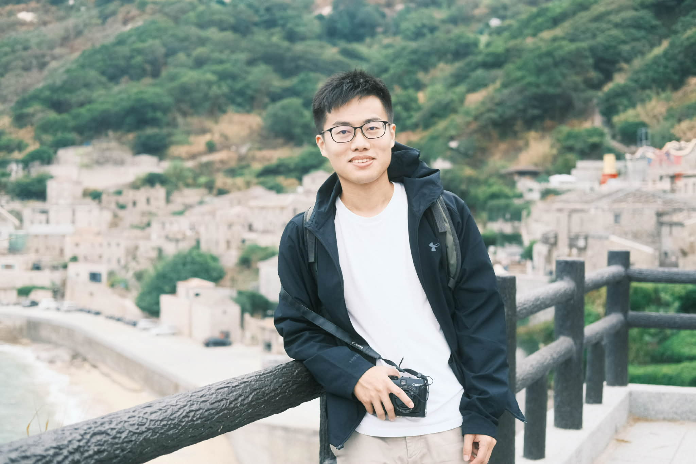

2020 – 2026
M.S./Ph.D. Degree
Department of Computer Science, National Tsing Hua University, Taiwan
(Direct Pursuit from Master Program)
Advisor: Prof. Chun-Yao Wang
I earned my bachelor’s degree from National Taiwan University of Science and Technology, worked as a software engineer in Japan, and later returned to Taiwan for graduate study at National Tsing Hua University. Through my PhD journey, I have conducted research in EDA, participated in CAD competitions, and focused on algorithmic and learning-based approaches to digital circuit optimization.

Academic background spanning computer science, electrical engineering, and EDA research.
Industry experience in Japan and Taiwan before and during academic development.
Representative publications in logic synthesis, reverse engineering, and machine learning driven EDA.
Competition results and academic recognition across major CAD events.
Technical and language capabilities for research, implementation, and international collaboration.
I am interested in EDA research, logic synthesis, heterogeneous integration, and related collaborations. Feel free to reach out for research discussion or professional contact.